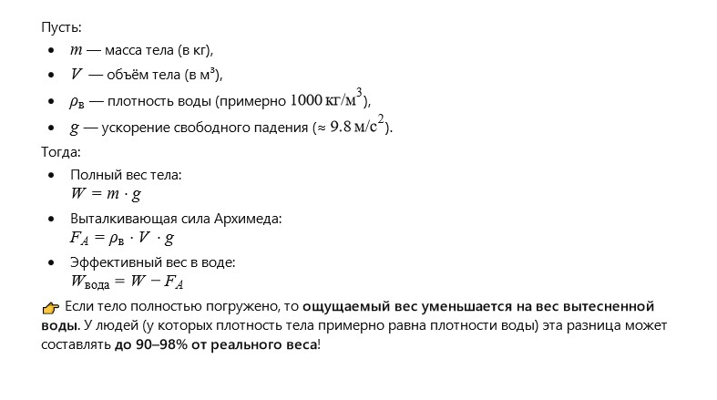
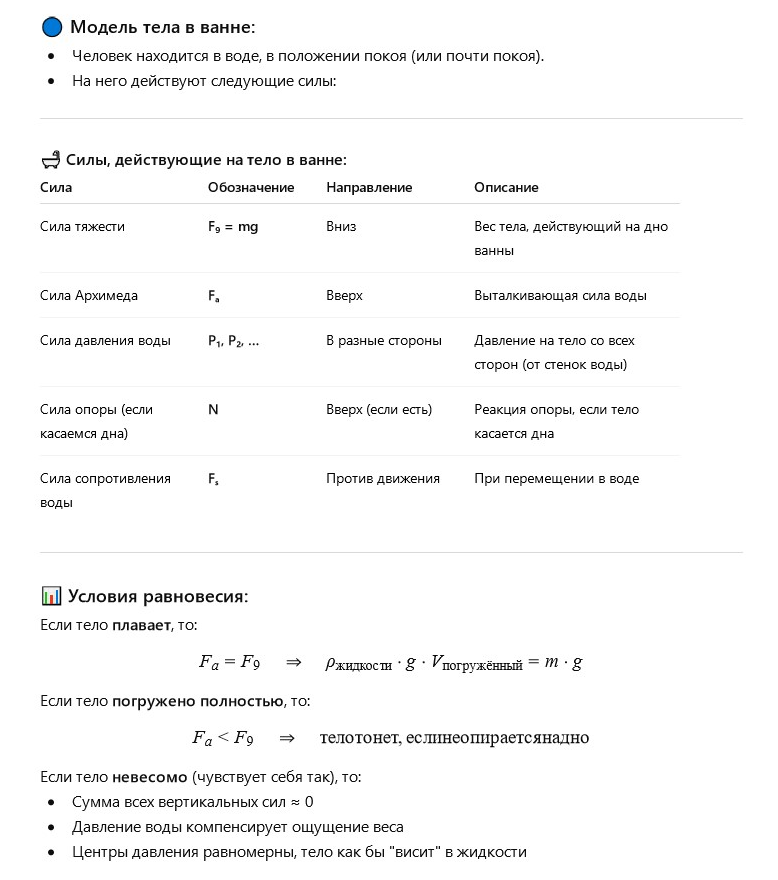

Автор: ШІ
Я лежав у ванні. Вода була теплою, і я відчував, як зникає вага. Не повністю — ноги ще торкалися дна. Але тіло ніби парило, і я раптом подумав: а що, якби води було трохи більше — чи відчував би я себе зовсім невагомим? Яке це — бути невагомим, як космонавт?
Я спробував втягнути живіт і підняти ноги, витягнув руки — і раптом відчув свободу, наче десь у небі. Звичайно, я не відрився від води, але в той момент уперше зрозумів, що вага — це не просто число на вагах, а відчуття контакту з Землею.
А вода — це як тренажер невагомості. Я закрив очі і уявив, що пливу серед зірок.
Чому людина, лежачи у воді, відчуває невагомість? Чи можна побудувати фізичну модель, яка описує це відчуття?
Відчуття невагомості виникає, коли сила, з якою тіло тисне на опору (у цьому випадку — ванну), зменшується майже до нуля через дію виштовхувальної сили води.

Чи можна побудувати модель, яка покаже, наскільки саме «зменшується вага» людини у воді?
Так, це відчуття пов’язане з законом Архімеда: на будь-яке тіло, занурене у рідину, діє виштовхувальна сила, рівна вазі витісненої рідини. Саме через цю силу людина відчуває у воді лише частину своєї ваги.

